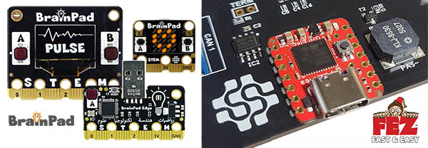

FEZ
These FEZ products can be used with the DUE platform.
FEZ Flea
The FEZ Flea form factor is the same as the Seeed Studio Xiao. This opens up the option for many existing accessories.
The FEZ Flea can also be soldered to a PCB just like a SoM.


FEZ Pico
The FEZ Pico form factor is the same as the Raspberry Pi Pico. This opens up the option for many existing accessories.
The FEZ Pico also includes a STEMMA connector that can connect to many existing STEMMA modules.


Visit the GHI Electronics to learn about the product and see purchasing options.

Beginner to Expert
We recommend beginners start out with the BrainPad, it is made for beginners and scales up to advanced learning. The FEZ boards can then be used to start designing prototypes and proof of concepts. Low-volume products can be manufactured with ease, thanks to the small form factor and SMT solderability of the FEZ boards.

Tip
The heart to the FEZ boards is SITCore SC13 chipset.
Loading the Firmware
The first step to load the DUE firmware on your hardware is to navigate to the console.duelink.com and click on the Firmware tab and follow the instructions.

Getting Started
The DUE getting started page shows steps needed start using the DUE Link ecosystem of coding options.

Hardware Demos
The supported hardware's form factor opens the opportunity to use some of the many available accessories on the market. Here are just a few examples.
PicoMate
The PicoMate is a single-pcb with multiple Grove compatible sensors that are removable or work in place. Samples in the repo demonstrate extending DUE with Python or .NET.

Grove Module Shields
These Grove shields are a great way to connect the many Grove modules on the market to DUE. There are many drivers located in the DUE samples driver repo to get you started.

Qwiic/STEMMA QT Connector
The built in JST connector on the FEZ Pico opens up the door for even more expansion options, using Qwiic or STEMMA QT sensors.

Mikroe Click Shield for Pico
Mikroe Electronica has 1000's of Click sensors available, this shield provides an interface to those modules. Our demo in DUE Samples repo uses the LEDRing Click module.
Warning
Click shield for Pi Pico has a major flaw. MISO and MOSI pins are swapped on board rev 1.00.